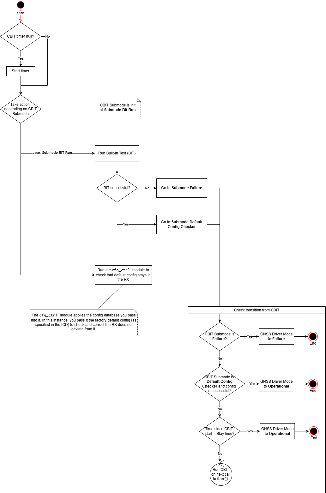

A driver for the Ublox M9: CBIT
The Continuous Built-In Test (CBIT) procedure
The normal workflow of the driver shall be:
RX is powered up ⇒ Driver begins execution ⇒ Driver goes to PBIT mode ⇒ PBIT succeeds and goes to Operational
The story could end here, but it’s interesting to add checks in run-time to assert that subsystems work and no corrective action is required. That is called Continuous Built-In Test (CBIT). Of course, the need for this and how complex it becomes will vary from application to application. For the driver of a receiver, the CBIT I’ve designed is fairly simple. It consists of the following stages:
-
Run a BIT. The BIT was explained here.
-
Configuration Control. Same as PBIT, but instead of applying the application-specific configuration, you check that the rest of the config items remain at their default values. That can be very useful if someone connected to the receiver via a port reserved for debug and changed some defaults and forgot to revert them before fielding the unit back again. This has actually happened to me in the past, using a MosaicX5 from Septentrio.
Now, does this mean that I have parsed all the configuration items in the ICD and put their default values as expected values, like this?
1 0x10780001: { 2 "name":"CFG-USBOUTPROT-UBX", 3 "type": "L", 4 "expectedVal": 1, # <-- the default in the ICD 5 "actualVal": CFG_VAL_UNKNOWN, 6},Yes, yes I have. Good thing LLMs can parse PDFs pretty good.
Tansition from CBIT
Transition from CBIT is pretty straight forward, but one thing needs to be taken into account: cfg_ctrl needs to check the defaults of a lot of items. So many that they would make the CBIT take too much time, thus taking too long to back to Operational mode. To avoid this, there’s a maximum time that CBIT may run.
To sum up, CBIT will go to Operational mode if BIT was OK and the maximum CBIT time is reached or all default config items were checked. Any other case will put you in Failure mode.
See below the diagram for the CBIT:
